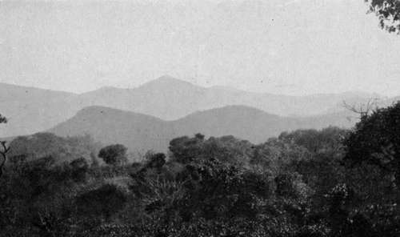
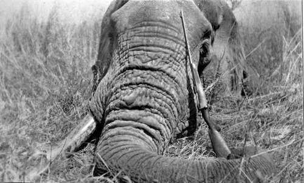

Chapter II. Shooting In Central Angoniland (Nyasaland)
Description
This section is from the book "Wild Life In Central Africa", by Denis D. Lyell. Also available from Amazon: Wild Life in Central Africa.
Chapter II. Shooting In Central Angoniland (Nyasaland)
A slight description of Central Angoniland—Nyasaland well watered and thickly bushed—The rainy and dry seasons—Grass fires—Cold at night —Plateaux in Nyasaland—Distance walked in Central Africa—Some rules for hunting—Two elands shot—One wounded and found dead— Pain suffered by wounded beasts—Vital shots at game—Tenacity of life in game—Elephants and rhinos easy to kill—Mr. Selous's opinion of tenacity of life in lions—The first bullet the all-important one— Close quarters best with dangerous game—Fine sable antelope shot— Horns and ivory shrinking with age and heat—Natives' fondness for meat—The best country for large sable heads—Eland cow and bull shot—Good cow eland horns—Remarks on hunting game—Three zebras killed—Zebra meat causing rash—Cutting the throats of game —Good hunting tribes—Search for an elephant—Hartebeest shot— Vegetable nuisances—Some good kudu heads got in Central Africa— Abundance of kudu.
Central Angoniland is perhaps one of the best game countries left in Africa, as it is still in the same primeval condition as it was before the whites came to the country some twenty years ago. As I will enumerate the game in later chapters, I will only say that nearly all the species known to exist in Nyasaland are found here, and the only species that are absent are the Nyasaland gnu and the inyala. The puku is found on the Bua River, the only locality where it is known to exist here; although it is extremely abundant in the adjoining territory of North-Eastern Rhodesia.
The topographical aspects of the country are on the whole a vast undulating extent of bush, with a dambo here and there, and many hills. I have mentioned before that the word " dambo " means a grassy space, sometimes clear of trees, but often with bushes or trees here and there, and usually there are plenty of ant hills, which form fine stalking cover for approaching game. The drainage of the surrounding bush finds its way to these places, and many of the rivers in this country have their source in some such marshy hollow.
Compared to many of our other possessions in Africa, Nyasaland is well favoured with trees and a good water supply, and the rains being regular, the natives are able to depend on the soil producing a plentiful supply of food. In the course of time the amount of timber they cut to make their gardens will doubtless affect the rainfall, although they naturally never go very far from water. They are very wasteful with the timber, as they collect it in heaps and burn it, for they believe that the wood ashes make the soil more productive, and, certainly, vegetables such as pumpkins seem to grow best where there are plenty of ashes. The rains usually break about the beginning of December, and they last until April or May.
About August all the grass has got yellow and dry, and the natives then burn it, and this is ruinous to the growth of the trees in the dryer parts of the country. They start these fires so as to get the field mice, which are burnt to death ; and millions of reptiles, insects, and birds must be killed also; and in some cases I have heard of young elephants and antelopes being burnt to death. The hottest months are those of September, October, and November, and at this time the heat can be terrific in some parts of the country, such as the Chiromo marsh. In North-Eastern Rhodesia, the valley of the Luangwa River is very hot, and the same can be said of the valley of the Zambesi River.
In May, June, and July the nights are often cold, and fires are a comfort, but about August the weather gets hotter by day and night, although the nights are never uncomfortably hot on the higher levels. There are many ranges of hills and detached kopjes scattered all over Nyasaland and North-Eastern Rhodesia.
In Nyasaland the best known mountains are the plateaux on Mlanje and the Zomba range, and people often go to these places for a change. The cold during June and July can be bitter on either of these plateaux, and natives taken there should certainly be provided with a blanket, for cold generally crumples up a native, although he can usually stand any amount of heat.
The Mlanje mountains, Nyasaland.
The scenery on the Mlanje Plateau is very beautiful and many cedar wood forests will be seen, and there are also many clear streams of pure, cold water. Any visitor to Nyasaland, or even people who settle there, should make a journey to this plateau, for the climate and vegetation are quite different from any other that will be experienced or seen in the country. The plateau has, besides the cedar forests, many beautiful heaths, and the air is cool and crisp and quite exhilarating after the atmosphere of the plains.
In this chapter I intend to give some account of my experience of game in Central Angoniland, so I will now begin to do so.
While my huts were building I often went for a walk into the surrounding bush, and my favourite time was about 3 o'clock in the afternoon, when the sun began to lose its power and sink in the west. The only disadvantage about the afternoon shoot is that game killed has to be left out for the night, especially if it is a large bodied beast, and from the European point of view this does not improve the meat for the table, but natives do not mind it in the least.
I have often wondered how many miles I have walked through rough bush and along native paths in Central Africa. Having lived in the country for ten years, I must surely have covered quite 20,000 miles on foot. I have never kept a record of the distance covered, although in my old diaries, most of which are at home, I have kept notes of most of the game I have shot, and of all my many journeys after game.
When living in some lonely hut or house, very few days pass that I do not go out into the bush with my rifle. Life in such a place, far from civilisation and libraries, would be intolerably slow if one did not spend the time in this way. It is interesting to take notes of the game, and for a couple of years or so I was constantly taking rough sketches of their footprints, or spoor, as well as sketching their droppings and making notes on their habits.
A Fine Single-Tusked Elephant Shot In Nyasaland.
There are three important rules that should be observed by all who hunt big game, and these are :
1.—Observance of the direction of the wind.
2.—To make as little noise as possible.
3.—Get close for the shot so as to hit a vital spot.
There are plenty of other rules, but these are certainly the most important; at least, they are according to my ideas.
Continue to:
- prev: Remarks On Sport And Making A Home In The Bush. Part 4
- Table of Contents
- next: Shooting In Central Angoniland (Nyasaland). Part 2